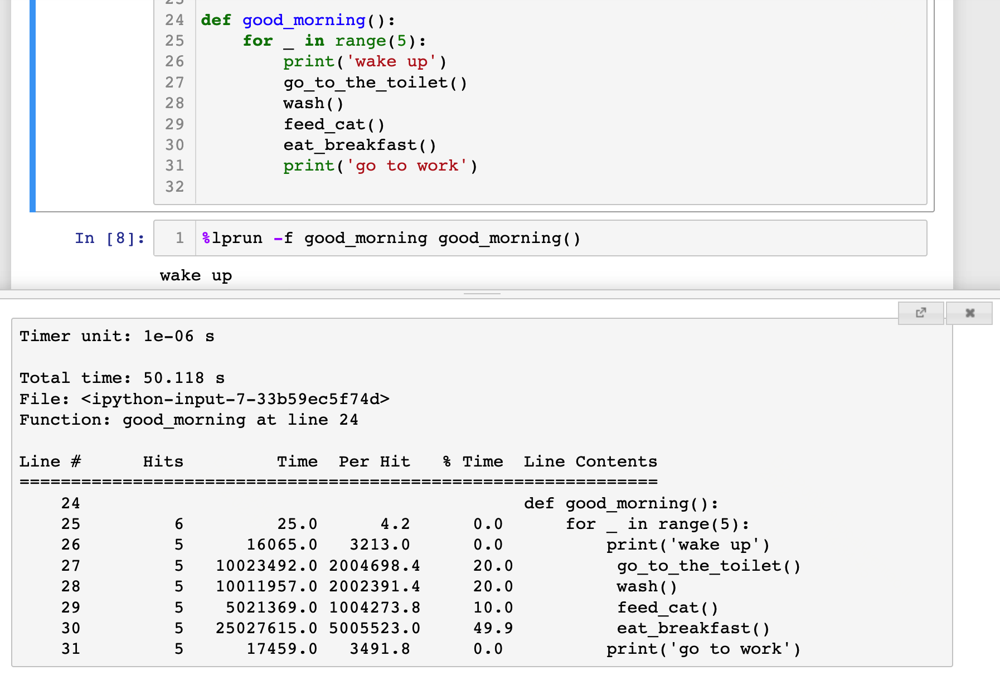
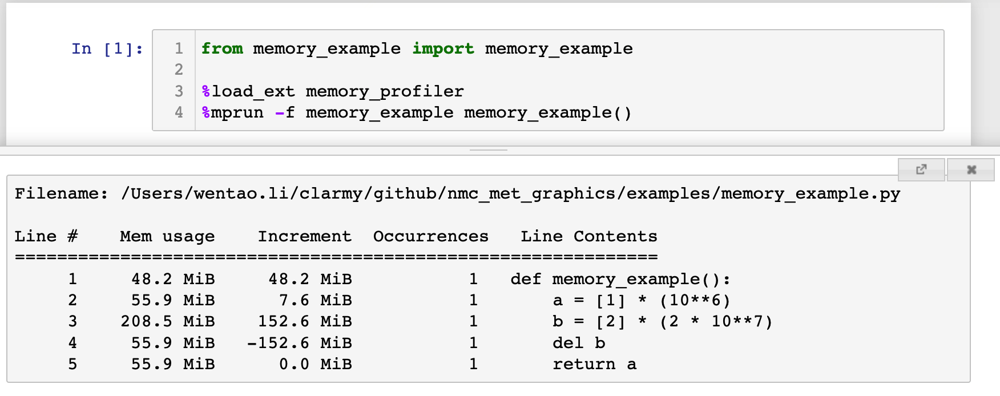

用 profiler 给你的程序做性能分析
你是否遇到过这种情况：自己的 Python 程序跑得奇慢无比，但是又不知道具体是哪些代码拖后腿？或者你的程序一执行就死机，把内存吃得干干净净你却束手无策？来吧，跟我一起试试用两个 profiler 工具给你的程序做个体检。
首先我来介绍一下 profile 的概念，profile 在这里可以翻译为“剖面/切面”，它其实也是面向切面编程（AOP）的一种经典实践。它可以在不破坏你代码原有结构的情况下，对其进行运行状态的统计分析，最终形成统计报告。打比方来说，就是给你的代码做个 X 光检查。
其实 Python 的标准库里就包含有相关的包（有兴趣的可以查查标准库里的 profile 和 cProfile 包），但是因为语法偏向底层，使用起来很不友好，因此用的人很少，当然，万能的开源社区早就为我们封装了更易于使用的扩展包，下面我就来介绍一下。
line_profiler
line_profiler 是《Python数据科学手册》作者推荐的一款 profile 工具，它专门用于统计分析程序的运行时长，帮你找到你程序运行速度的瓶颈，它可以统计到单行代码的命中次数、运行时长以及耗时百分比。
下面我们来实践一下，首先使用pip安装：$ pip install line_profiler
然后我们写一个通俗易懂的测试程序：
import time
def wash():
print('wash face and rinse mouth')
time.sleep(2)
def go_to_the_toilet():
print('go to the toilet')
time.sleep(2)
def eat_breakfast():
print('eat breakfast')
time.sleep(5)
def feed_cat():
print('feed cat')
time.sleep(1)
def good_morning():
for _ in range(5):
print('wake up')
go_to_the_toilet()
wash()
feed_cat()
eat_breakfast()
print('go to work')
if __name__ == '__main__':
good_morning()
假如这个程序就模拟你的早晨，当你运行它的时候，它会打印出你从起床到上班之间这段时间的做事流程。假如你想知道这些流程中，哪些部分耗时比较严重，需要优化，你可以使用 line_profiler 来分析。但是你需要给待分析的函数前面加上 @profile 装饰器。也就是把 good_morning 函数定义改成这样：
@profile
def good_morning():
for _ in range(5):
print('wake up')
go_to_the_toilet()
wash()
feed_cat()
eat_breakfast()
print('go to work')
假如上面程序保存的文件名为: my_morning.py，我们就可以在终端执行: $ kernprof -v -l ./my_morning.py
该命令会将程序完整跑一遍，最终跑完我们就可以看到 line_profiler 给我们做的程序剖面了：
Wrote profile results to my_morning.py.lprof
Timer unit: 1e-06 s
Total time: 50.0267 s
File: ./my_morning.py
Function: good_morning at line 24
Line # Hits Time Per Hit % Time Line Contents
==============================================================
24 @profile
25 def good_morning():
26 6 18.0 3.0 0.0 for _ in range(5):
27 5 132.0 26.4 0.0 print('wake up')
28 5 10004575.0 2000915.0 20.0 go_to_the_toilet()
29 5 10008650.0 2001730.0 20.0 wash()
30 5 5008208.0 1001641.6 10.0 feed_cat()
31 5 25004756.0 5000951.2 50.0 eat_breakfast()
32 5 353.0 70.6 0.0 print('go to work')
看到了吗？每一行代码的耗时及其占比的权重都很清晰地展示出来了，其中吃早餐耗时最多，占比50%。如果我们想要继续调查吃早餐中的哪一步耗时太多，就可以如法炮制再在 eat_breakfast() 函数上添加 @profile ，然后再重复上述步骤，它就会同时把两个函数的剖面都输出出来。也就是说 line_profiler会且仅会对所有带有 @profile 的函数进行剖面分析，其他函数它会忽略。
这里面还有一个很有用的统计量就是 Hits，即命中次数/执行次数。当我们的程序中有 if/else 逻辑分支的时候，我们可以通过不同分支下代码的命中次数来侧面观察程序的逻辑路线是否符合预期。此外，假如某个逻辑中的代码命中次数长期为0，那么这个分支下的代码就有可能隐藏着未被测出的 bug，需要重点关注。
上面的例子是放在脚本文件里执行的，如果是在 Jupyter 里，要怎么做剖面呢？方法也很简单，首先需要在一个单独的 cell 里执行：%load_ext line_profiler 以加载该插件，然后在定义完函数以后执行 %lprun -f good_morning good_morning() 即可，它会在 Jupyter 的弹窗中显示剖面的数据，其效果如下图：

在工程实践中，我们不仅要关心代码的执行速度（时间维度），还需要考察代码的内存占用（空间维度），而 line_profiler 仅能构建时间维度的剖面，想要给程序的内存做剖面，就需要引入另一个包: memory_profiler 。
memory_profiler
memory_profiler 是仿照 line_profile 开发的专门用于内存分析的剖面工具，安装方法：$ pip install memory_profiler。
memory_profiler 的使用方法也和 line_profiler 类似，也是在要做切面的函数上加 @profile 装饰器，我们仿照官方文档的例子编写以下代码：
@profile
def memory_example():
a = [1] * (10**6)
b = [2] * (2 * 10**7)
del b
return a
if __name__ == '__main__':
memory_example()
将文件保存为 memory_example.py，注意，memory_profiler 的调用方法和 line_profiler 不太一样，我们回到终端，执行：$ python -m memory_profiler ./memory_sample.py。
最后出来的结果：
Filename: memory_sample.py
Line # Mem usage Increment Occurrences Line Contents
=============================================================
4 40.750 MiB 40.750 MiB 1 @profile
5 def memory_example():
6 48.387 MiB 7.637 MiB 1 a = [1] * (10**6)
7 200.977 MiB 152.590 MiB 1 b = [2] * (2 * 10**7)
8 48.387 MiB -152.590 MiB 1 del b
9 48.387 MiB 0.000 MiB 1 return a
上述输出中 Mem usage 是总的内存占用，它会随着 Increment 的大小而发生变化，Increment 是单行代码的内存增量，如果代码的执行增加了内存的占用，则 Increment 为正，若释放内存，则 Increment 为负，Occurrences 是发生次数，等同于 line_profile 的 Hits 。
memory_profiler 也可以集成在 Jupyter 中，调用的命令是 %mprun -f, 但是需要注意的是，你不能像 line_profiler 那样直接在 Jupyter 中定义函数然后用 %mprun -f 做剖面，否则它会提示: NOTE: %mprun can only be used on functions defined in physical files, and not in the IPython environment.，也就是说你必须把你要剖析的函数放在一个 .py 模块中（注意此时函数不应加 @profile 装饰器），然后在 IPython 或者 Jupyter 里导入该函数，再做剖面，例如：

好了，今天关于 profiler 的介绍就到此为止了，但是两个包的功能可远不止上面介绍的这些，关于两个包的更多用法，可以去读一下 GitHub 上两个代码仓库的 README（直接在 GitHub 里搜包的名字即可），写得很详细，也很有趣。